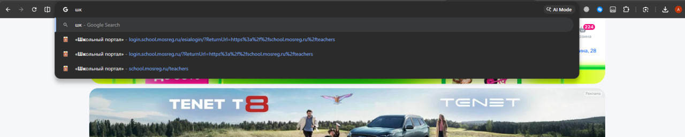
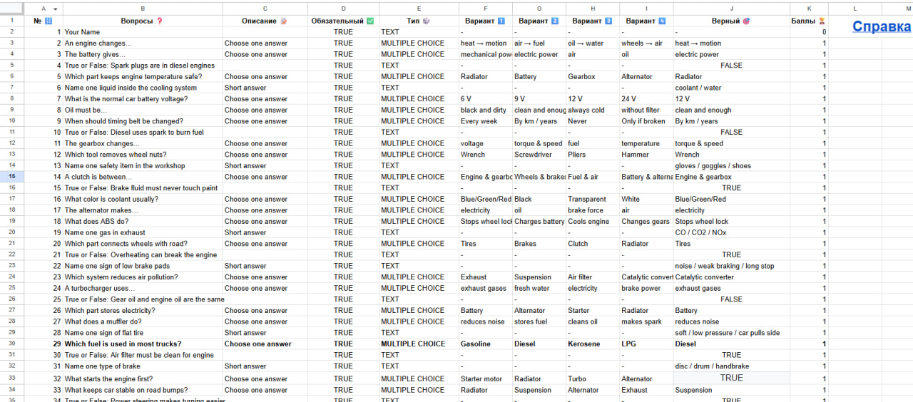

От простых повседневных приёмов — к цифровым инструментам, которые экономят время, снижают нагрузку и помогают лучше организовать обучение.
Меньше ручных действий: искать ссылки, копировать одни и те же комментарии, заново собирать тесты и материалы.
Когда есть понятные приёмы и готовые инструменты, работа идёт спокойнее и предсказуемее.
Освобождается время на объяснение, обратную связь, организацию группы и сопровождение студентов.
Win + V открывает историю скопированного текста.
«Работа принята, но нужно исправить оформление»
«Добавьте вывод и проверьте таблицу»
«Ссылка на задание»
«Срок сдачи продлён до пятницы»
| Ctrl + L | Сразу перейти в строку адреса: быстро вставить, скопировать или отправить ссылку. |
| Ctrl + T | Открыть новую вкладку. |
| Ctrl + W | Закрыть текущую вкладку. |
| Ctrl + Shift + T | Вернуть случайно закрытую вкладку. |
| Ctrl + F | Найти слово на странице, в документе или PDF. |
| Alt + Tab | Быстро переключаться между окнами: например, между браузером, документом, журналом и презентацией. |

Позволяет быстро вырезать нужную часть экрана.
Можно показать студентам или коллегам, куда нажать и что открыть.
Скрин сайта, формы, графика, ошибки в документе или таблицы уже становится учебным материалом.
Для многих типов вопросов можно сразу получить баллы и результаты.
Ответы автоматически попадают в таблицу, и их легко анализировать.
Один шаблон формы можно быстро адаптировать под новую тему, группу или модуль.
Если вопросы уже собраны в Google Sheets, форму можно создать автоматически.
Не нужно вручную добавлять десятки одинаковых вопросов.
Преподаватель работает в таблице, а форма создаётся автоматически.
Задания по темам, модулям и контрольным точкам.
Можно быстро выбирать и комбинировать задания.
Сразу видно, какие темы вызывают трудности у группы.
Посещаемость, сроки сдачи, результаты, комментарии.

Преподаватель задаёт тему и цель, а ИИ помогает быстро получить заготовку: текст, вопросы, таблицу, план, карточки, варианты заданий.
текст, план занятия, вопросы, карточки, задания
сложный материал до более понятного уровня
один материал в несколько форматов работы
«Сделай краткий текст по теме и составь 8 вопросов на понимание»
«Составь 15 задач по процентам в трёх уровнях сложности»
«Сделай таблицу сравнения двух процессов и добавь 5 проверочных вопросов»
«Составь план анализа текста и критерии проверки ответа»
рабочие программы, положения, методические материалы, отчёты, критерии оценивания, большие тексты студентов.
Важно: итог преподаватель обязательно проверяет сам.
Вопросы по содержанию
Тест с вариантами ответа
Краткий конспект или план
Таблица сравнения
Задание на установление последовательности
Практическое задание или кейс
| Тем, кому сложно | Более короткий материал, понятные формулировки, больше опор и подсказок. |
| Основной группе | Стандартный вариант с обычным объёмом и привычным форматом. |
| Сильным студентам | Дополнительные задания, открытые вопросы, анализ и аргументация. |
| Отсутствующим | Самостоятельная версия с чёткой инструкцией, сроком и формой сдачи. |
может быть неполным, неточным или слишком общим
иногда ИИ путает данные, даты, определения и источники
готовый текст может требовать сокращения, уточнения и адаптации
что именно нужно получить
ИИ, таблица, форма или шаблон
точность, уровень, логика, оформление
занятие, тест, рассылка, отчёт, онлайн-задание
Лучший результат даёт не отдельная программа, а выстроенная система: простые цифровые приёмы, понятные сервисы и осознанное использование ИИ в ежедневной работе преподавателя.